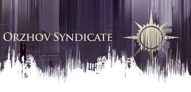
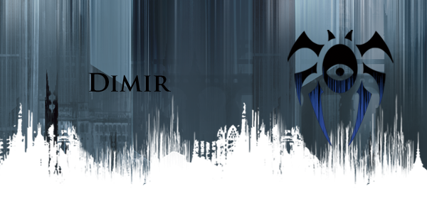
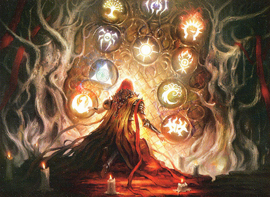

The Izzet League: The mad scientists and crazed engineers of Ravnica
- The Izzet (Is-it) League are charged with attending to Ravnican civic works (water supply systems, sewers, heating/cooling systems, boilers, and roadways). This; however, is a tedious and basic task for the brilliant minds that make up this guild.
- Izzet combine theoretical and applied science with spellcraft to perform grand experiments, obtain vast knowledge, and engineer some of the greatest vessels and mechanisms on the plane of Ravnica. The guild ventures out of the sewers to the city streets, bolstering the city’s moral with their brilliant inventions. Caution must be taken when dealing with the Izzet however. Although good natured, the creations of the Izzet are known to be more failed than successful; and as a result, have lead to a few fatal ends for Ravnican citizens. One of the Izzet’s greatest successes was the creation of Weirds; a new race of elemental being that perform most of the civic services in Ravnica (while the Izzet happily continue to tinker and experiment).
- Obsessive, Keen, Intellectual, Creative, Impulsive
- Human, Minotaur, Goblin, Vedalken, Weird, Dwarf, Viashino, Faerie, Rhox, Loxodon
- The elder dragon Niv-Mizzet (Niv-mizz-it) holds leadership of the Izzet league. Known to be about 15,000 years old, Niv-Mizzet signed the Guildpact for his faction so many years ago. Although vastly intelligent and supremely powerful, Niv does not care to rule over Ravnica as it would be considered a trivial task. Niv-Mizzet is the original father to all the Viashino of Ravnica.
- Chaotic Good; Think Salarian; Red and Blue magic alignment
The Azorius Senate: the order-obsessed lawmakers of Ravnica

- The Azorius (Ah-zore-e-us) Senate function as the Ravnican government; mediating and regulating the (known) activities of all the other guilds through the use of their legions of knights and paladins trained in magic to disable and hinder those who would break the law.
- Azorius believe their legislation to be the singular force that prevents Ranvica from descending into chaos. They advocate for blind justice, peace, and the status quo by acting through inaction; spending hours upon hours in courthouses and government buildings creating legal documents and proclaiming numerous decrees (many of which are ignored). The resulting effect of such inaction and strict regulation is disdain from many of the other guilds.
- Bureaucratic, Aloof, Formal, Chivalrous, Arrogant
- Human, Vedalken, Spirit, Angel, Dwarf, Goblin, Rhox, Loxodon
- Isperia (Is-pear-e-a) is the guild leader of the Azorius. This Vedalken is advised by the three "columns" of the Senate; Jelenn column (lawmakers), Lyev column (law enforcers), and Sova column (judges law breakers). Her arrogance falls closely behind her intelligence and moral high ground. The Azorius Senate works alongside the Boros Legion and Selesnya Conclave whom both see to enforcement of the law, and the Orzhov Syndicate whom see to the financial backing and religious influence of Ravnica.
- Lawful Neutral; Think Turian; White and Blue magic alignment
The Boros Legion: the militaristic law enforcers of Ravnica
- The Boros (Boar-ous) Legion acts as the major army of Ravnica. The Boros Army is tasked with enforcing the laws made by the Azorius; as well as, educating and training Ravnican citizens of current developments and even dangers from other guilds.
- Keeping the peace on Ravnica in sheer numbers and raw militaristic power, Boros are the passionate warriors and soldiers who fight any that oppose their way of life. Many different ranks exist among the army, but there are
four major theaters that stand out among the rest (in warfare, a theater is an area in which important military events occur or are in progress):
- The Theater of Order: largest force tasked to fight against Rakdos and Gruul invasions
- The Theater of Integrity: tasked to find the hidden refuges of the Dimir
- The Theater of Recruitment: tasked to find and indoctrinate guildless citizens
- The Warmind Initiative: along with the Izzet, tasked to develop new technologies for the Boros to keep peace
- Passionate, Courageous, Tactical, Loyal, Clever
- Human, Angel, Minotaur, Goblin, Giant, Dwarf, Viashino, Rhox, Loxodon
- The archangel Alurela (Ah-lure-e-la) is the leader of the Boros Legion. Righteous and valiant, she follows a long line of archangels who have fought may glorious battles to victory. She believes that her alliance with the Azorius and Orzhov will bring true peace and prosperity to Ravnica.
- Lawful Good; Think Asari; Red and White magic alignment
The Selesnya Conclave: The faith devoted nature-lovers of Ravnica
- The Selesnya (Suh-les-knee-ah) Conclave act to preserve what's left of any nature in the vast cityscape of Ravnica; sending herolds to spread the word and gather new followers along the way. The Conclave are also called upon by the Azorius from time to time to enforce legislation and investigate the goings on of other guilds.
- Selesnya are collectively described by some as "a selfless and nurturing spiritual group", while others may prefer "a brainwashing nature cult". Neither of which are incorrect. The guild involves itself in the establishment and maintenance of peace, life, and unity on Ravnica. To this end, Selesnya find themselves at a moral divide. While some focus on peace by creating genuine places of worship; others may be found silencing any Ravnican citizen who would oppose their faith.
- Nature-Loving, Revenant, Selfless, Deceptive, Purist
- Human, Elf, Centaur, Dryad, Rhox, Loxodon, Merfolk, Faerie
- Mat'Selesnya (Matt-Suh-les-knee-ah), The World Tree, is the guild leader of the Selesnya. Unknown to most how truly old this being is, The World Tree can only speak through Trostani; a triplicate of dryads who had voluntarily fused with the tree to act as an oracle for their leader. Little is known of the true intentions of Mat'Selesnya, but every flower to ever bloom among the streets of Ravnica can be accredited to this ancient being.
- Lawful Neutral; Think Hanar; Green and White magic alignment
The Orzhov Syndicate: The money corrupt religious order of Ravnica

- The Orzhov (Ore-zah-ve) Syndicate are the financial backing of most if not all of the businesses of Ravnica. Creating a religious facade, once a righteous religious order is now a corrupt organization whom only praise power and money.
- Orzhov are the bankers and tax collectors of Ravnica; working side-by-side with the Azorius. As such, the Orzhov have a wealth of information of the goings on of some of the other guilds; of which they will disclose at the right price. Orzhov have also discovered a way to keep the spirit of the dead alive and deal with many of the spirits of Ravnica; allowing them to collect debts beyond death. This guild also holds a strong standing as one of the greatest religious orders of Ravnica; using this influence as a financial advantage over the Ravnican citizens.
- Corrupt, Traditional, Pious, Wealthy, Sinister
- Human, Spirit, Angel, Lich, Vampire, Faerie, Goblin, Dwarf
- The Syndicate are presided over by a council of spirits known as the Obzedat. They act as the ultimate pillars of faith and prosperity; the Church of Deals. Anyone living or dead who owe a debt answer to this council. High-ranking members of the order have learned ways to extend their lives and are mutated in many ways as a result.
- Lawful Evil; Think The Shadow Broker; Black and White magic alignment
The Simic Combine: The extreme biologists of Ravnica
- The Simic Combine make up the physicians of Ravnica; discovering new medicines and learning the biology of the different races of Ravnica. When other healing spells and enchantments fail, the Simic are the go to guild for a solution.
- The most emotionally distant guild, many Ravnican's think of the Simic as crazy mutant makers; not entirely unwarranted. While most Simic have a strong devotion to the study of life, medicines, and biomancy; few of the guild have taken efforts a step forward by improving upon the life-forms of Ravnica; whether with consent or without. Mutated creatures can be found scoured among the cityscape of Ravnica thanks to the Simic guild. Rumor has it that some citizens have even taken it upon themselves to acquire such enhancements.
- Intelligent, Reserved, Creative, Cautious, Modest
- Human, Elf, Vedalken, Merfolk, Viashino, Faerie, Rhox, Loxodon
- Vorel is the leader of the Simic Combine. Holding strong to the old ways of the ethical study of biomancy, this half human half merfolk calls upon the Boros and Selesnya to filter out any of the immoral among his guild. Vorel is known as the most modest and selfless guild leader; coming from nothing and continuing to advocate for his guild.
- Neutral Good; Think Salarian, specifically Maelon; Blue and Green magic alignment
The House Dimir: The tricksters and criminals in the shadows of Ravnica

- House Dimir (Deh-meir) are the guild of couriers, investigators, reporters, and archivists of Ravnica; that is to the public eye. To the citizens of Ravnica, the guild has been defeated through the passage of time, only a few remaining to claim themselves part of the house. This is far from the truth. The true power of the Dimir lies in their role as the spies, smugglers, thieves, assassins, and other illegal positions in Ravnica. Purveyors of knowledge and counterintelligence, this guild's objective is to create turmoil and twist Ravnica to its own end.
- Dimir hide in lies and betrayal; casting illusions, disguising as doppelgangers, and convincing many a guildless citizen into joining their mission. This guild is so secretive that even its own agents often do not know who they truly work for. Many of the house Dimir are strung among the other guilds of Ravnica, gathering information and willing to strike when the time is right.
- Elusive, Cunning, Secretive, Manipulative, Deceitful
- Human, Merfolk, Spirit, Vampire, Lich, Faerie, Goblin
- Lazav, the Dimir Mastermind, is this guild’s leader; though only a handful of his own house know of his leadership, let alone existence. Lazav is the master puppeteer pulling on all the strings that run through Ravnica. The people of his house hunted down for centuries by the Azorius, Boros, and Selesnya; Lazav and his closest allies have yet to be discovered and his plans still yet remain a mystery
- Neutral Evil; Think Illusive Man; Blue and Black magic alignment
The Golgari Swarm: The rot farmers and necromancers of Ravnica
- The Golgari (Goal-Gary) Swarm are tasked with the agricultural sector of Ravnica. They are the embodiment and amalgamation of life and death; both being as essential as the other. Golgari delve in necromantic magic and as a result are the largest Ravnican guild.
- Ask any citizen of Ravnica and they will say that they have seen some of the most grotesque and repulsive beings in all of Ravnica aligned to this guild; however, appearances are not always everything. Golgari live lives of solitude among the underground of Ravnica along with the Dimir and some Izzet. While some Golgari still see hope in humanity to truly understand their place on the plane, others have waited long enough and take to the streets acting as the monsters society believe them to be. Not much is known of the true intentions of the Golgari, but many know of the stench of death that follows the swarm around each city corner.
- Recluse, Organized, Misunderstood, Pure, Creative
- Human, Elf, Lich, Goblin, Dryad, Viashino, Centaur, Minotaur
- Jarad is the Golgari Lich Lord and leader of the swarm. Jarad follows from a long line of Elves who have at one point in time been the most powerful guild in all of Ravnica. Jarad lives to keep his swarm growing with necrotic magic, biding his time until the Golgari will rise to power once more.
- True Neutral; no Mass Effect equivalent; Green and Black magic alignment
The Cult of Rakdos: The demon-worshipping hell-bent fanatics of Ravnica
- The Cult of Rakdos (Rack-dos) have found themselves performing in the service industries (entertainment and food) and menial labor unions of Ravnica. Most of the guild align themselves to demon worship; most notably their demon leader Rakdos himself. The severity of their reckless and deranged behavior ranges from thrill chasing circus performers to bloodthirsty cannibals; some a mix of both.
- Utter chaos is the goal of the Rakdos. Inflicting pain and arousing fear among the Ravnican citizens, Rakdos push the limits of life and death. Some guildless run in terror while others relish in amazement of their unbelievable stunts. The Cults intentions are pure, simple, and bloody.
- Hellbent, Insane, Thrilling, Sadistic, Reckless
- Human, Lich, Demon, Goblin, Vampire, Minotaur, Viashino, Faerie, Dwarf
- Rakdos, the Demon Lord is and has been the leader of the Rakdos Cult since its birth. Rakdos is the embodiment of insanity, horror, and cruelty. His sole mission is to burn all of Ravnica to the ground; launching countless onslaughts on the other guilds of Ravnica.
- Chaotic Evil; Think Vorcha; Red and Black magic alignment
The Gruul Clans: The barbaric primal outcasts of Ravnica
- The Gruul (Gruel, like the food) Clans are the second largest guild of Ravnica. Once charged with maintaining the wild places on Ravnica, overtime civilization progressed and overran the plane of Ravnica; pushing out the Gruul. With the Simic claiming jurisdiction over the future of nature and the Selesnya holding fast to nature as a promotion of their conclave, the Gruul were left with nothing; outcasts to the cityscape. As a result, Gruul have become a barbaric tribe guild; raiding and pillaging areas to live in until its resources depleted, only to move onto the next city area to do the same.
- Gruul keep to their many traditions and rituals passed down from generations. Shamans and Elementalists move and shift the earth around them to cause destruction. The most destructive guild of Ravnica; they are a major combatant to the Boros Legion. Ravnicans have no respect for the Gruul; only a select few races hold discontempt with leaving the Gruul to become part of society.
- Human, Elf, Centaur, Rhox, Loxodon, Giant, Merfolk, Dwarf, Goblin, Viashino
- Primal, Destructive, Stubborn, Resentful, Barbaric
- Unlike every other guild, there is no true leader of the Gruul; however, the giant Borborygmos (Bore-bore-e-gee-mous) is the largest and angriest of the Gruul. Falling from a long line of giant descendants, Borgy holds the most resentment against the cities of Ravnica. No one has ever dared oppose his command of the Gruul hoards. Borgy works day and night to reclaim the land of his ancestors; working with no other guild to achieve this end.
- Chaotic Neutral; Think Krogan; Red and Green magic alignment
